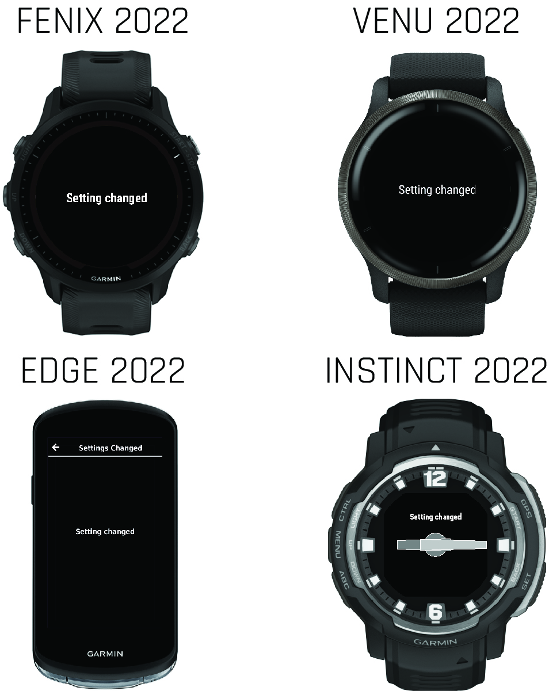
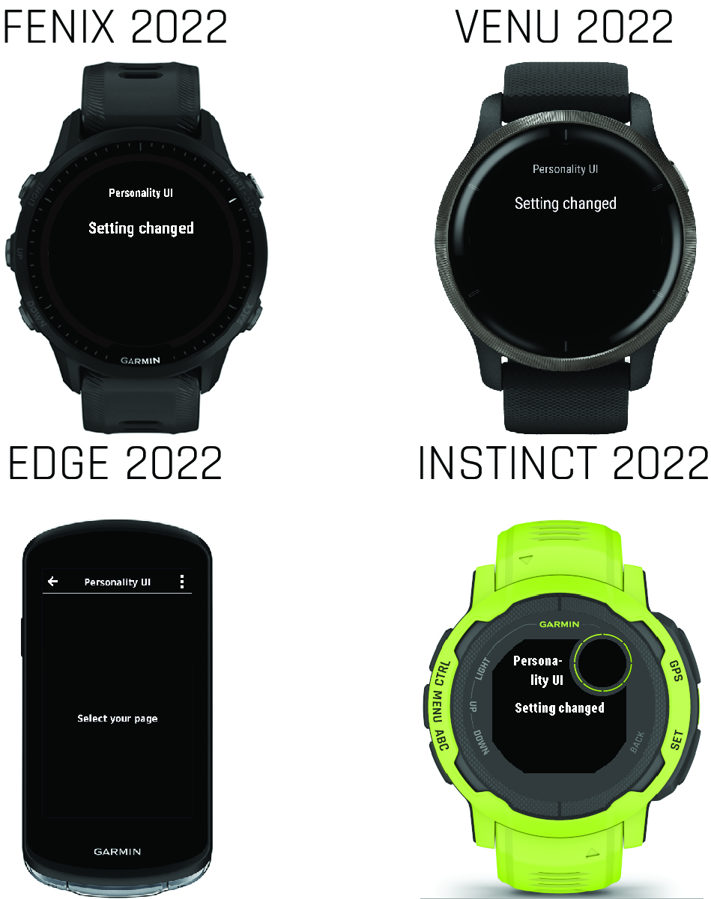
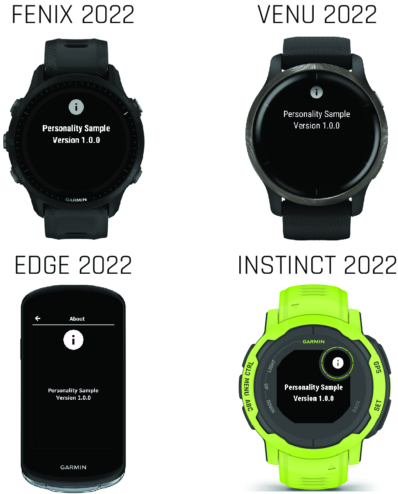

Prompts
A prompt is a page of textual information for the user. A prompt can be a valuable tool that provides important information. It can contain helpful tips or messages explaining why the user is unable to perform a specific action.
Prompts are often pages without titles that automatically disappear after a short time.
Example
<!-- layout.xml -->
<!-- Informational Prompt -->
<layout id="InfoPromptDark" >
<!-- Dark Background -->
<drawable id="DarkBackground" />
<!-- Prompt Body -->
<text-area id="mainLabel" text="@Strings.informationPrompt" personality="
prompt_color_dark__body
prompt_size__body_no_title
prompt_loc__body_no_title
prompt_font__body_no_title
" />
</layout>Prompts with a Textual Title

A textual title for the prompt provides additional context.
Example
<!-- layout.xml -->
<!-- Informational Prompt -->
<layout id="TitlePromptDark" >
<!-- Dark Background -->
<drawable id="DarkBackground" />
<!-- Prompt Title -->
<text-area id="title" text="@Strings.mainTitle" personality="
prompt_color_dark__title
prompt_size__title
prompt_loc__title
prompt_font__title
" />
<!-- Prompt Body -->
<text-area id="mainLabel" text="@Strings.informationPrompt" personality="
prompt_color_dark__body
prompt_size__body_with_title
prompt_loc__body_with_title
prompt_font__body_with_title
" />
</layout>Prompts with an Icon Title

You can use an icon in place of a textual title to provide context more quickly, or with greater emphasis.
Example
The following example places a warning icon above the prompt body text.
<!-- layout.xml -->
<!-- About page prompt -->
<layout id="AboutPageLight">
<!-- Light Background -->
<drawable id="LightBackground" />
<bitmap id="aboutIconLight" personality="
system_icon_light__about
prompt_loc__title_icon
prompt_size__title_icon
" />
<text-area text="@Strings.aboutPrompt" personality="
prompt_color_light__body
prompt_size__body_with_title
prompt_loc__body_with_title
prompt_font__body_with_title
" />
</layout>